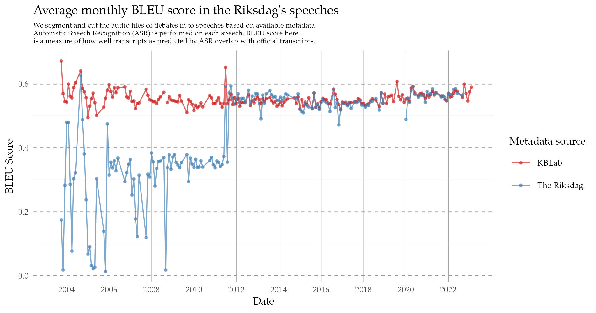
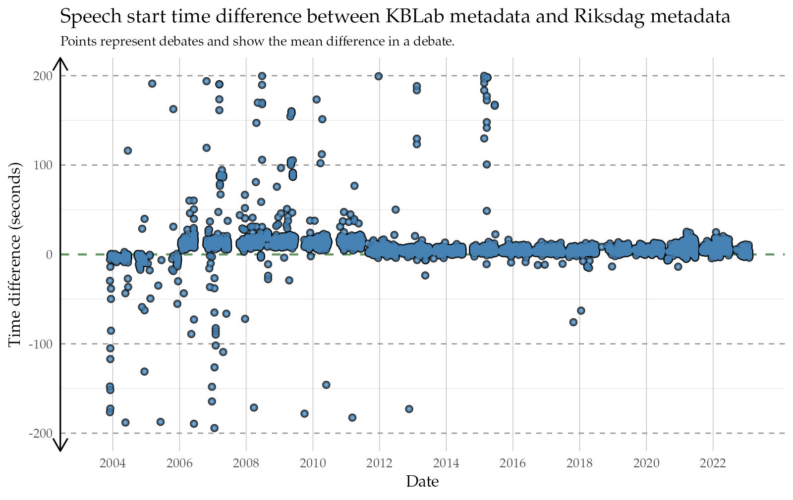

The Riksdag is Sweden’s legislature. The 349 members of the Riksdag regularly gather to debate in the Chamber of the Parliament House. These debates are recorded and published to the Riksdag’s Web TV. For the past 20 years the Riksdag’s media recordings have been enriched with further metadata, including tags for the start and the duration of each speech, along with corresponding transcripts. Speaker lists are added to each debate, allowing viewers to navigate and jump between speeches easier 1. This metadata also allows linking members of parliament and ministers with the debates they have participated in.
Aside from Web TV, the Riksdag has also opened up most of its databases and made their data freely available through the Riksdag’s open data platform 2. At KBLab we’ve made use of these resources by using texts of parliamentary motions to create seminars, workshops and tutorials 3 4 5.
When assessing the quality of the available metadata from the debates, we found most of the material from 2012 and forward was generally accurate and of high quality. However, the required degree of precision of metadata always depends on one’s use case. And in our case it was important that only one speaker – the one making the speech – be present in the indicated window. With this in mind, it soon became evident that a certain level of adjustment of the existing metadata was required. Illustrating this with an example below, we see that the Riksdag’s metadata (right video) tends to include parts where the speaker of the house talks. The left video shows the automatically generated metadata from the method we developed for locating and segmenting speeches.
Our primary use case is to create an Automatic Speech Recognition training dataset out of the debates. In order to align the text with the audio at a sentence, or word level, we need to do forced alignment 6. Modern Riksdag metadata, such as the debate above, serves as a good benchmark against which we can evaluate our own automated method. Should our method be able to match its alignment quality – using only official transcripts and audio – then we can be reasonably certain the method also perform well on older material.
The importance of metadata
Browsing the Web TV of the Riksdag and seeing how well structured the data appeared, at KBLab we naturally became curious to find out whether the Riksdag had made audio and media files available through its open data platform and APIs. We sent them an e-mail inquiring whether there was an audio API, to which they responded that such an API in fact did exist, only they had yet to settle on a good way of communicating this service to the public.
At KBLab, part of the work we do is use the library’s collections to train Automatic Speech Recognition models for the Swedish language 7, which we then release freely. However, in contrast to high resource languages such as English, Swedish does not have much data in the way of spoken audio with corresponding annotated transcripts. When training our wav2vec2 model, we therefore first trained it unsupervised (without labeled transcripts) on over 10000 hours of radio broadcasts. After this unsupervised pre-training, we used the scarce, available annotated data, which numbers somewhere in the order of a couple hundreds of hours to finetune the model.
Ideally, however, we would like for a larger portion of the training to consist of supervised training (training with annotations/transcripts).
- The alignment is achieved using only an official transcript, without the reliance on any further metadata.
Why is it important?
The Riksdag’s speeches in numbers
| Source | Total duration of debates (hours) |
|---|---|
| The Riksdag’s metadata | 6398.4 |
| Audio files | 6361.4 |
| Source | Total speech duration of debates |
|---|---|
| The Riksdag’s metadata | 6742.15 |
| Adjusted metadata (KBLab) | 5858.36 |
Our method for finding which debates had associated media files, was to first download the speeches in text form from “Riksdagen’s anföranden”. Out of more than 300000 available speeches from 1993/94 and onwards:
- 133130 speeches belonged to debates that had downloadable audio files in the Riksdag’s media API.
- Of the above only 122525 speeches had valid audio files, or were found to be at all present in the audio files.
- After applying additional quality filters 117725 speeches remained. These filters included removing for example:
- duplicate transcripts attributed to different speakers.
- debates starting and ending in the middle of speeches.
- sudden jumps/cuts/edits in the audio while a speech was in progress.
- speeches shorter than 25 seconds in duration.
Some text above the debate.

![An illustrative sketch with text, describing in 5 steps how KBLab's method for finding speeches in audio files works. Step 1 is to use automatic speech recognition to transcribe an audio file. Step 2 is to fuzzy string match the ASR output against official transcripts to get approximate start and end locations for a speech. Step 3 is to perform speaker diarization to partition the audio file in to segments of different speakers. Step 4 is to assign speaker diarization segments with high degree of overlap with the speeches associated with the approximate start and end locations as predicted by fuzzy string match. Step 5 is to use start and end locations of the assigned segments as the new predictions of metadata for when a speech begins and ends.](speech_finder_method.png)
Videos
Evaluation of metadata quality



Figure 1: Caption.
Suggested usage
- Academic research
- Automatic speech recognition.
- Diarization.
- Bias research.
- The general “speech finding” method proposed here can be reused in other contexts.
Contribute to RixVox
- Dialect tagging
- Accent tagging
- Create links of members of parliament and ministers to Wikidata.
RixVox in the future
An example can be seen here: https://www.riksdagen.se/sv/webb-tv/video/partiledardebatt/partiledardebatt_HAC120230118pd↩︎
BERTopic workshop simplified version: https://colab.research.google.com/drive/10kB3wfoHSfZE48vEKmznIw-ff36uR8gs#scrollTo=Jd1gAoyslhuc↩︎
BERTopic workshop: https://colab.research.google.com/drive/1VsTk2oSTrne4y2hllzM-iMHLd6endkfg?usp=sharing↩︎
Document classification (given a parliamentary motion classify which party wrote it): https://colab.research.google.com/github/MansMeg/IntroML/blob/master/assignments/swedish_bert_classification.ipynb↩︎
https://linguistics.berkeley.edu/plab/guestwiki/index.php?title=Forced_alignment↩︎
See our Wav2vec2 model: https://huggingface.co/KBLab/wav2vec2-large-voxrex-swedish↩︎